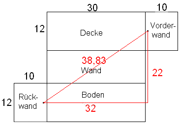

Lösung Puzzle 4: Der findige Elektriker
Der Elektriker benötigt 38m 83cm Draht.
Klappt man die Seitenwände und die Decke gemäss obenstehender Figur in die Bodenebene um, so erkennt man mit Pythagoras: Die minimale Länge beträgt Quadratwurzel der Summe von 22*22 und 32*32.
Diese Lösung stammt von Friedel aus Deutschland. Besten Dank!